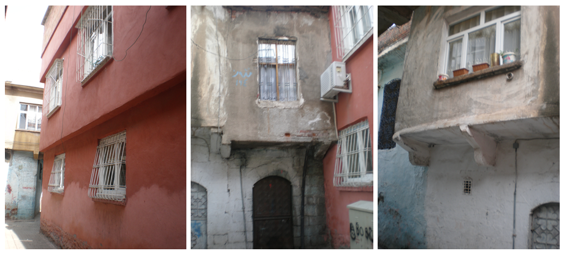

In 2013, a photographic survey of the Sur district was conducted pursuant to the blanket “risk area” designation. Every immovable structure was documented to catalog structural risk in the Old City district building stock. These photos were ultimately used as evidence in a politicized and embattled designation that legalized the expropriation and demolition of the Sur district. The images, then-- taken before the war, and activated during and after it-- operate in a destructive valence. This is consistent with scholarship on the role of image-production in colonial objectives of land appropriation, cultural decimation and forced transformation: in this context, the image, from survey to map, fabricates the right to total displacement.
As the mobile cameras of the surveyors moved through the UNESCO-protected Old City, buildings were consigned to retroactive obliteration with each click of the aperture. Yet, this survey also works against its own grain. Being a painstakingly comprehensive undertaking, with multiple surveyors working for multiple days to capture in detail the whole district in their devices, the survey happens to provide a thorough archive of a city whose destruction it facilitated.
This duality of effect, internal to the risk survey as a photographic operation, has informed Groundhem’s development of the “countersurvey” method. This method has driven our approach both remotely and on the ground, and has taken three forms. The first, a cartographical intervention, is covered in the Mapping Violence project; while the other two, both photographic in an expanded sense of the medium, will be described here.
The first of these is the photogrammetric countersurvey. While the vast majority of immovable structures in the conflict area have been destroyed-- enabled by expropriation, forced evacuation, and the blockage of oversight and return-- many expropriated properties outside of this zone still remain inhabited. Some of the remaining neighborhoods closest to ongoing redevelopment projects are threatened with the imminent risk of eviction and demolition. We pored over court documents to identify the most contested of such neighborhoods, and set out to devise a strategy to strengthen conservation prospects. Inspired by the work of Ariel Caine of Forensic Architecture, who has consulted on our initiative, we adapted photogrammetric techniques to the dense urban fabric of Sur. Working like surveyors, we walked the narrow streets of the Abdaldede with residents and neighborhood leaders, obtaining photographic coverage of every surface in the neighborhood. This was painstaking work that required coordination between hand-drawn and cadastral maps over a number of days. Working in real-time, we generated 3D, pixel-based “point cloud” models street by street. These models are navigable, scaled and measurable, and will be augmented with video and interview material from inside historic courtyard houses along our path. When complete, this model will serve as an active repository of the unique forms of social life, urban memory and communal practice that have been built by the inhabitants of Sur. This model will be integrated with our larger open-source platform to encourage participation from those living in or displaced from Sur, who will be able to contribute portions of their personal archives and add streets to the model. Hopefully, this concentration of urban heritage can act as another bulwark against continued obliteration and erasure.

The second expanded-photographic countersurvey strategy developed by Groundhem is termed “landscape-testimony.” This technique responds to a convention in conflict monitoring that partitions the spacetime of armed hostilities into the rubric of “before/after.” This partition is particularly operative in optical modes of conflict-witnessing: in image-based damage reports conducted on the ground or through satellite technologies. In Sur, the distinction between before and after is an unproductive frame through which to visualize and respond to the event of State-led urbicide. Not only had the destruction and transformation of Sur been planned for years before the conflict-- leading many to believe that the invasion was a pretext for an urban design overhaul-- but the majority of destruction has occurred since the war’s official cessation. This destruction has been carried out behind military barricades, in the forcibly evacuated “curfew area” where the conflict was localized. Moreover, the new units under construction are entering the market at prices exponentially higher than those of their acquisition. New construction placate the regulatory discourses of heritage conservation by simulating Sur’s unique historic building style within a profit-oriented and centrally-controlled masterplan. These units are agents of displacement-- erasing built heritage and financially blocking the right of return-- that will continue to operate well beyond the horizon of transitional justice.
To make these images, we interviewed scores of displaced residents, who described to us what their neighborhoods had once been like, the experience of living through a high-intensity conflict on urban terrain, the manner in which they were displaced, the demolition of their homes, and the impossibility of return. We then identified the location of their former homes, and worked out ways to document the landscape of transformation that has forcibly swallowed them up. This latter feat was the most difficult to achieve. The sites in question, from which residents had been displaced during the conflict, remain under curfew and cannot be accessed. Resultantly, we had to climb up onto the Roman-era fortifications of the city, or the roofs of buildings just to see in-- but, of course, even then, the houses and neighborhoods in question have been razed to the ground, leaving few recognizable landmarks. So, in order to photograph specific sites, we needed to coordinate between the pointing of fingers, points on the map, and the lens of the camera, ambling surreptitiously along the wall that rings that city. Combining audio testimony, satellite images, and live-action landscape footage, we’ve produced a strategic image species, constructed through a form of soft-montage between ways of witnessing. The landscape-testimony seeks to visualize the hybrid terrain and opaque zoning through which construction operates as a tool for extending warfare into the civic domain. Believing that embattled landscapes are often encoded with traumatic information, we pieced together these images to facilitate that information’s visualization: a new way of witnessing the spacetime of war, beyond dichotomies of destruction/construction, war/peace, and before/after.